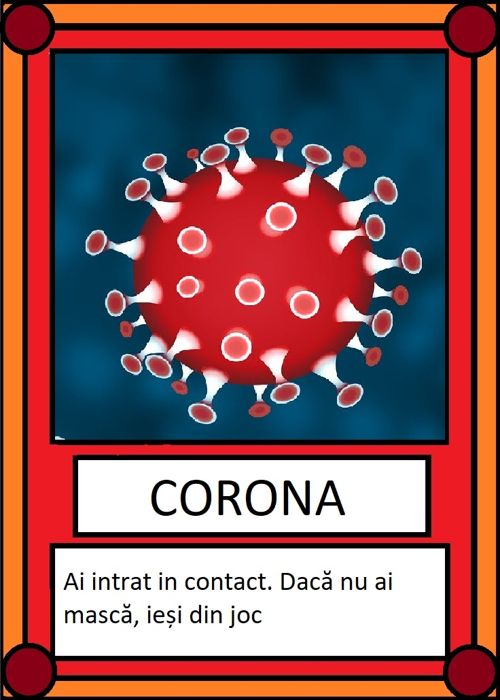
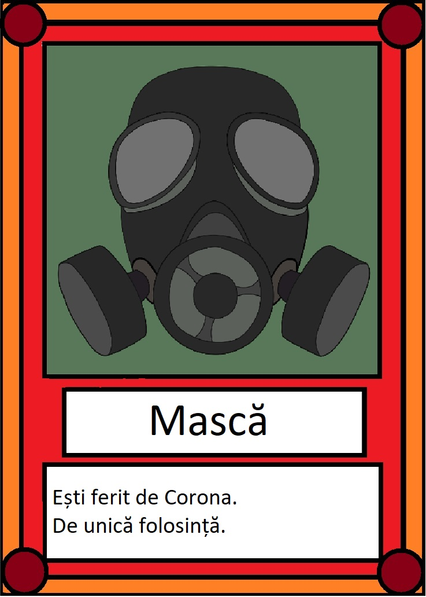
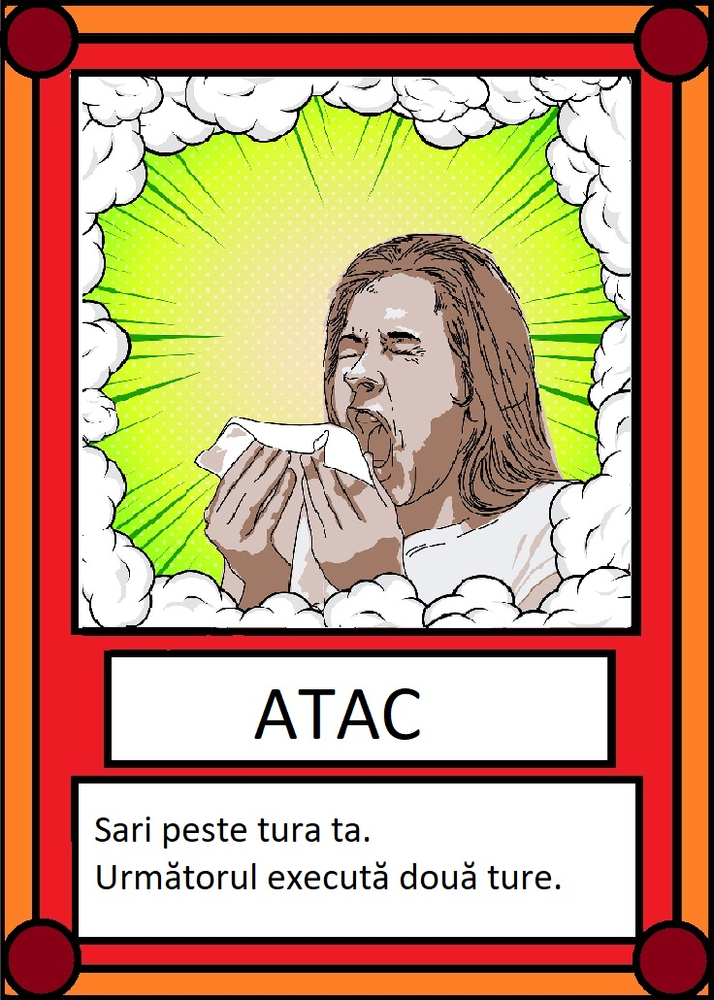
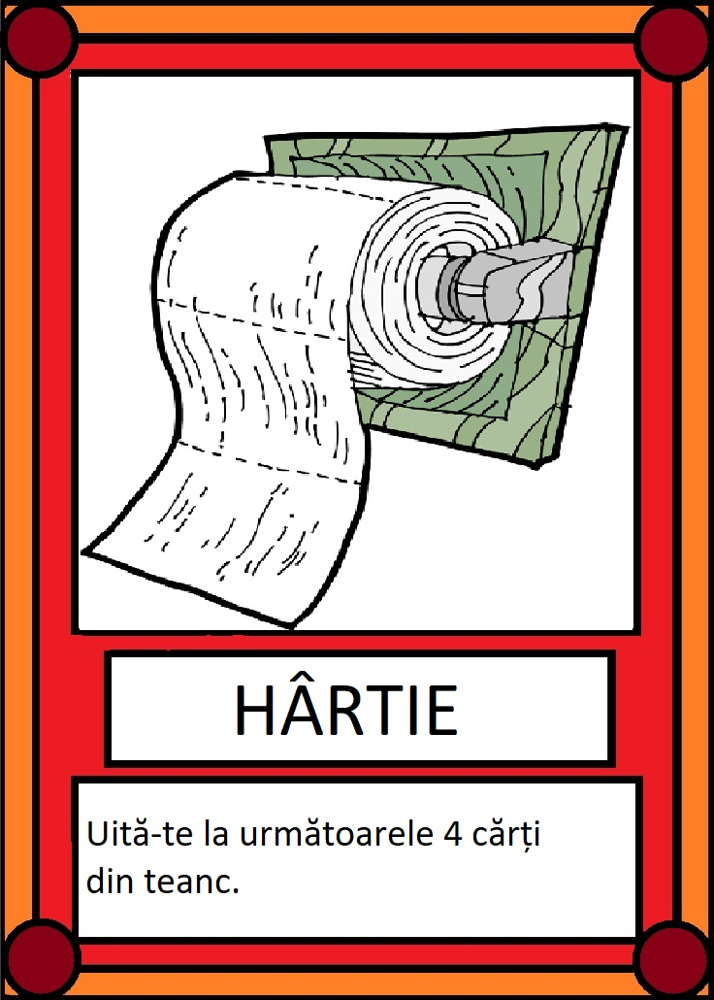
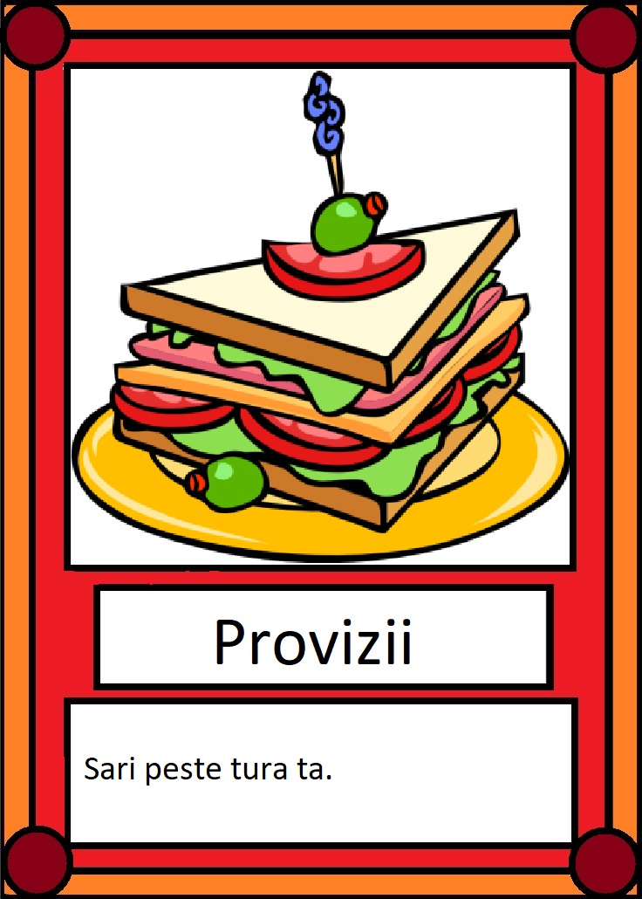
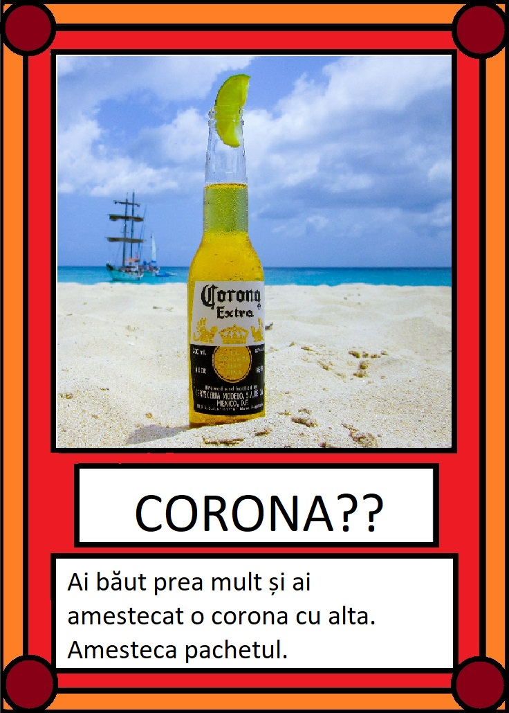
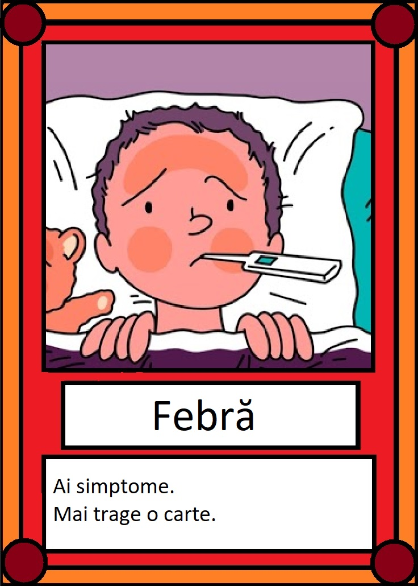

Joc suprem
Descarcă aici /*\







Reguli
- carti normale: Se joaca doar cate 2. Fură o carte de la cine vrei.
- carte Corona: cand tragi cartea asta trebuie sa o pui jos si iesi din joc. Daca ai cartea "Mască", poti continua sa joci.
(trb sa le pui pe ambele jos)
- carte Masca: Daca ai aceasta carte, poti opri Corona o data (e de unica folosinta)
- carte NU: opreste actiunea unei carti activate de alt jucator(mai putin cartea Corona)
- carte Sperie: sari peste tura ta. urmatorul executa 2 ture
- carte Provizii: Sari peste tura ta
- carte Infectare: cere o carte de la alt jucator. Care vrei tu fara sa te uiti
- carte Hartie igienica: pentru n jucatori, uita-te la primele n+1 carti
- carte Amesteca: amesteca pachetul
Derulare joc:
- Start: Fiecare jucator incepe cu 4 carti random + o carte Masca. Restul de carti se pun in mijloc sub forma de teanc.
- In_game: In tura ta poti juca oricate carti vrei. Cand pui o carte jos, faci ce scrie pe ea. La sfarsitul turei tragi o carte din teanc.
- End_game: jocul se termina cand tragi o carte Corona si nu ai Masca. Cartea Corona se pune inapoi in teancul de tras. Ultimul ramas in viata castiga.